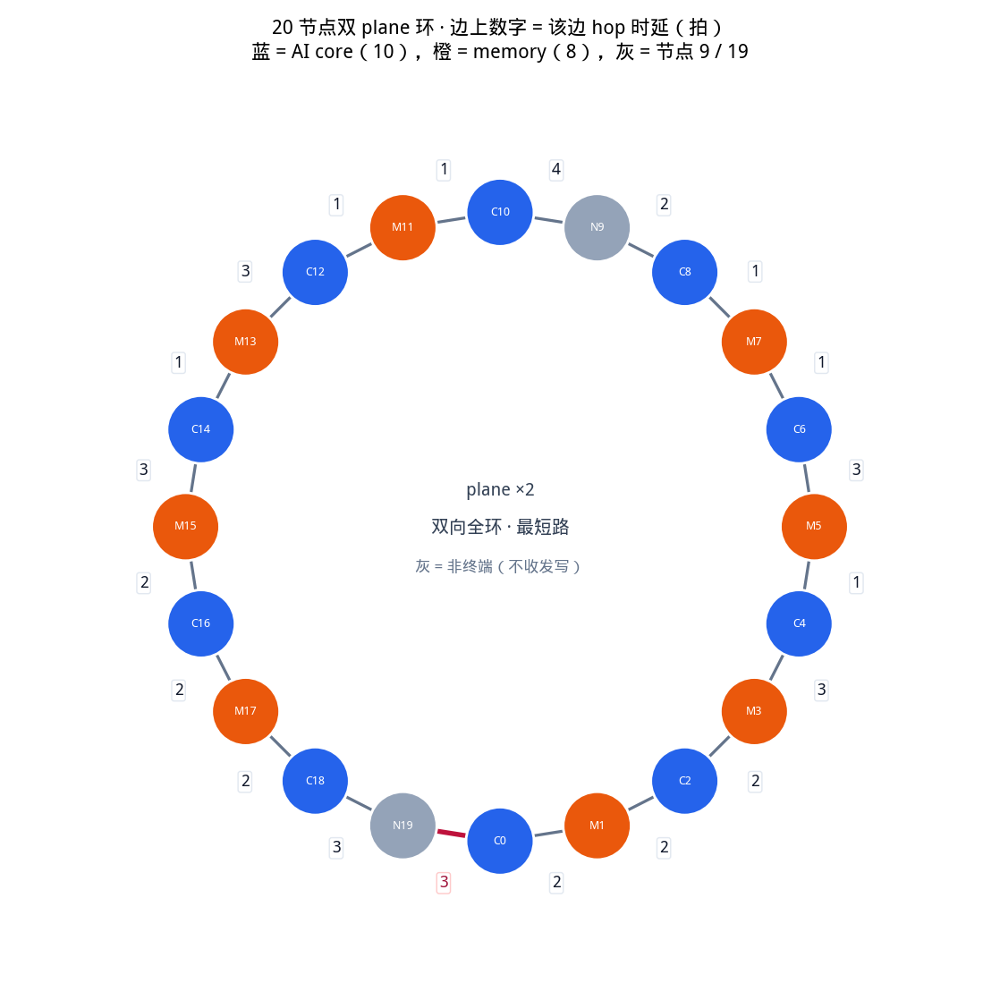
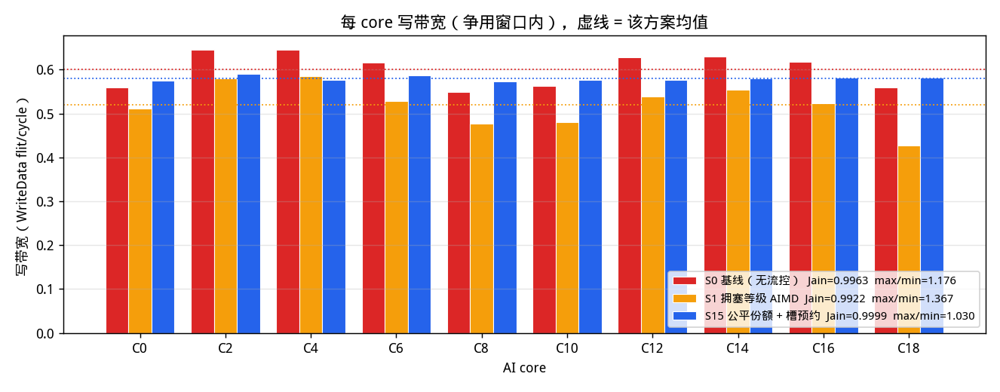
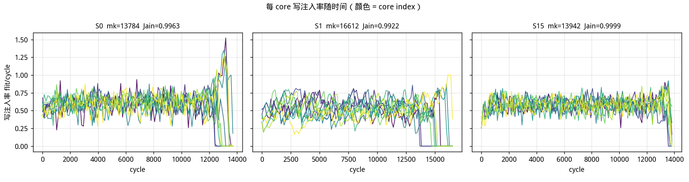
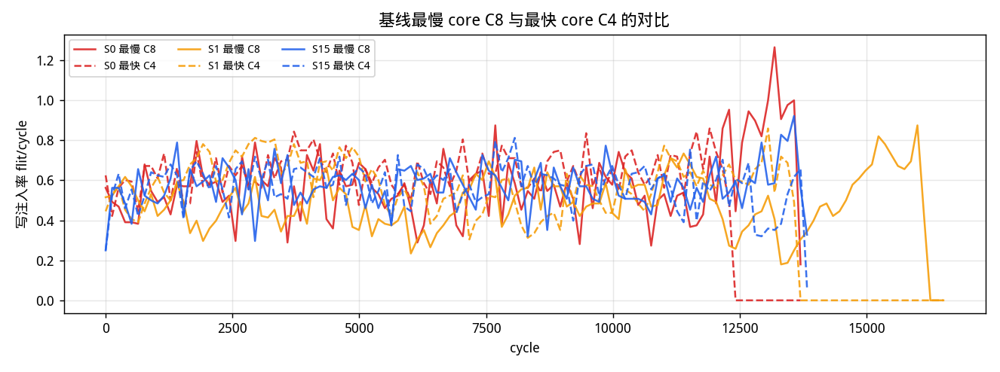
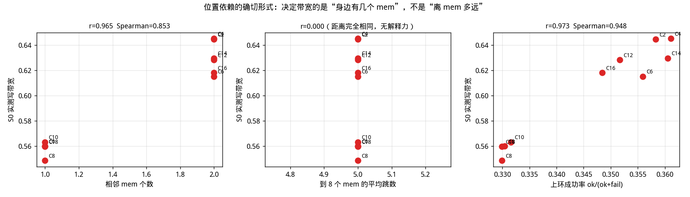
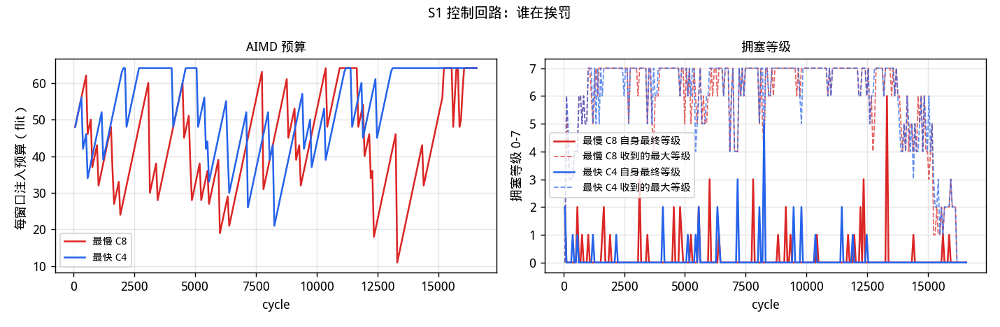
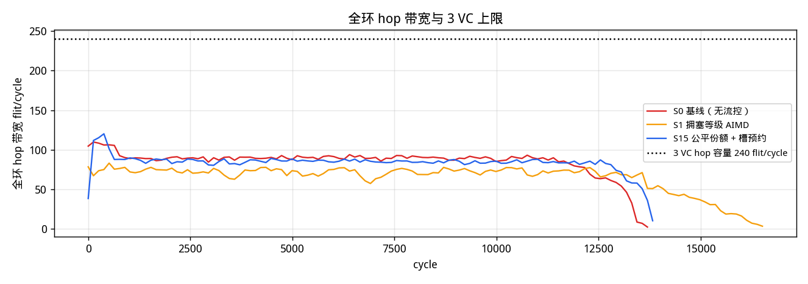

workload：10 个 AI core 对
8 个 memory 节点做均匀写，每 core
2000 笔 WriteNoSnp、每笔 4 个 WriteData flit
（每 core 8000 个数据 flit，共 20000 笔事务）。
节点 9、19 既不是 memory 也不是 AI core。
n_inring_blocked = 0、max_inring_hold = 0：
S15 的预约只压制上游注入，从不停住已经在环上的 flit，
因此不需要在环上增加任何缓冲。
| 项目 | 取值 | 说明 |
|---|---|---|
| 节点数 / plane 数 | 20 / 2 | 两个独立的双向 ring plane，共用同一套几何 |
| AI core | 10 个：C0, C2, C4, C6, C8, C10, C12, C14, C16, C18 | 写发起方（CHI RN） |
| memory 节点 | 8 个：M1, M3, M5, M7, M11, M13, M15, M17 | 写目的地（completer） |
| 非终端节点 | N9, N19 | 在环上转发，但既不发起也不接收写 |
| 路由 | 最短路（跳数平局走 CW） | S0 及全部方案一致 |
| plane 选择 | least_occupied | 两个 plane 之间做负载均衡 |
| 每 core outstanding | 128 | 同时在飞的写事务上限 |
| CHI VC | REQ / RSP / DAT | REQ、RSP、DAT 三条独立 VC，各自独立信用 |
| hop 容量 | 240 flit/cycle | 20 节点 × 2 方向 × 2 plane × 3 VC，σ=1 |
| 端口 | inject 1 / leave 1（每 node 每 plane） | 三条 VC 共享同一个上下环端口 |
| 上环队列深度 | 8 | 每 (node, plane, VC) |
| 下环队列深度 | 4 | 每 (node, plane) |
| I-tag 门限 t_inj | 64 | 限制注入饥饿时长 |
| E-tag 门限 t_xfer | 4 | 限制偏转次数 |
边上的数字是该无向边的 hop 时延（拍），两个方向相同。 节点 index 顺时针递增（+1 = CW）。
| 无向边 | hop 时延（拍） | 备注 |
|---|---|---|
| C0 — M1 | 2 | |
| M1 — C2 | 2 | |
| C2 — M3 | 2 | |
| M3 — C4 | 3 | |
| C4 — M5 | 1 | |
| M5 — C6 | 3 | |
| C6 — M7 | 1 | |
| M7 — C8 | 1 | |
| C8 — N9 | 2 | |
| N9 — C10 | 4 | |
| C10 — M11 | 1 | |
| M11 — C12 | 1 | |
| C12 — M13 | 3 | |
| M13 — C14 | 1 | |
| C14 — M15 | 3 | |
| M15 — C16 | 2 | |
| C16 — M17 | 2 | |
| M17 — C18 | 2 | |
| C18 — N19 | 3 | |
| N19 — C0 | 3 | 闭合边（N19 ↔ C0） |
一笔写 = REQ(core→mem) → DBIDResp(mem→core)
→ WriteData×4(core→mem) →
Comp(mem→core)，因此实例化 REQ / RSP / DAT
三条独立 CHI VC。per-core 写带宽 = 该 core 在争用窗口内成功上环的
WriteData flit / cycle。
_launch 从不阻塞已在环上的 flit，只占用槽位；本地注入由
_can_board 拒绝——要么该有向 hop 的这条 VC 被占，要么
arr_set 显示 σ 拍内有在环 flit 即将到达。
设 n 个 core 实测到的写带宽为 x1, …, xn。 Jain 公平性指数定义为
即算术平均的平方除以二次平均的平方： J = x̄2 / (x̄2 + s2)， 其中 s2 是（有偏）方差。由此得到三条性质：
与变异系数的关系是 J = 1 / (1 + CV2)，
CV = s / x̄ 就是表里的 CoV 列。
所以 CoV 与 Jain 是同一个信息的两种写法：CoV = 0 ⟺ J = 1。
| 下界 | cycle | 含义 |
|---|---|---|
| LB_link 每 VC 独立链路 | 7120 | REQ/RSP/DAT 各占一条 VC，取三者最大 |
| LB_port 端口合并 | 6353 | inject / leave 每 (node, plane) 只有一个端口，三 VC 共享 |
| LB_cut 割集 | 5012 | 跨割面的流量除以割面上的有向链路数 |
| LB_txn 事务串行链 | 91 | REQ→DBIDResp→WriteData→Comp 两个来回 |
| bound | 7120 | 以上取最大 |
makespan 下界 7120 拍， 由端口（LB_port）主导：三条 VC 共享同一个上下环端口。
| 方案 | makespan | Jain | max/min | CoV | 最低 BW | 最高 BW | 吞吐 flit/cycle | 吞吐差 | 偏转 | 上环失败 |
|---|---|---|---|---|---|---|---|---|---|---|
| S0 基线（无流控） | 13784 | 0.99629 | 1.176 | 0.06105 | 0.54863 | 0.64516 | 5.8038 | +0.0% | 23692 | 166293 |
| S1 拥塞等级 AIMD | 16612 | 0.99217 | 1.3673 | 0.08884 | 0.42777 | 0.58488 | 4.8158 | -17.0% | 18897 | 98365 |
| S15 公平份额 + 槽预约 | 13942 | 0.99992 | 1.03 | 0.0089 | 0.57258 | 0.58975 | 5.7381 | -1.1% | 23042 | 154741 |


时间轴上，基线里靠前的 core 从一开始就保持更高的注入率， 被压住的 core 全程贴在下沿。

| core | 相邻 mem 数 | 到 mem 平均跳数 | S0 写带宽 | 上环成功率 | hop_busy 失败 | I-tag 失败 | outstanding 失败 | 出向平均 λ |
|---|---|---|---|---|---|---|---|---|
| C0 | 1 | 5.0 | 0.56008 | 0.3304 | 16203 | 11 | 0 | 2.5 |
| C2 | 2 | 5.0 | 0.6446 | 0.3583 | 14309 | 17 | 0 | 2.0 |
| C4 | 2 | 5.0 | 0.64516 | 0.3611 | 14126 | 28 | 0 | 2.0 |
| C6 | 2 | 5.0 | 0.61524 | 0.3559 | 14458 | 19 | 0 | 2.0 |
| C8 | 1 | 5.0 | 0.54863 | 0.3299 | 16246 | 6 | 0 | 1.5 |
| C10 | 1 | 5.0 | 0.56323 | 0.3316 | 16109 | 19 | 0 | 2.5 |
| C12 | 2 | 5.0 | 0.62831 | 0.3517 | 14720 | 26 | 0 | 2.0 |
| C14 | 2 | 5.0 | 0.62968 | 0.3605 | 14176 | 18 | 0 | 2.0 |
| C16 | 2 | 5.0 | 0.61823 | 0.3484 | 14937 | 23 | 0 | 2.0 |
| C18 | 1 | 5.0 | 0.5596 | 0.3299 | 16225 | 24 | 0 | 2.5 |

写到隔壁 mem 的 flit 只占用一段链路就下环了；写到远处的 flit 要一路占着沿途每个节点的出向槽位，在“在环优先”下既更多地挡住别人， 也更多地被别人挡住。去掉 9、19 之后：
带宽与实测上环成功率的相关是
r = 0.973（Spearman 0.9483），
与 hop_busy 失败次数强负相关；
与解析过路流量的相关很弱（r = 0.0191）——
过路流量的总量差别不大，差别在于它什么时候正好卡住本地注入。
I-tag 类失败占比很小：_itag_blocks 只压制竞争的其他注入者，
对在环 flit 无效，所以它能限制饥饿时长，却造不出槽位。
total_fail 与 net_fail（只计纯粹由在环占用造成的失败），
等级 = min(7, count // 8)。CongestionBus 专用广播总线，不占环上 hop，
延迟 1 拍。= level_of(own_total_fail −
max_received_net_fail)；罚则 budget ← max(min, ⌊budget·α⌋)，
α = 0.75 / 0.5 / 0.25；奖励 budget ← min(window, budget + β)，
β = 16 / 8 / 2。| window | α/β 档位 | makespan | Jain | max/min | CoV | 吞吐 |
|---|---|---|---|---|---|---|
| 64 | spec | 16612 | 0.99217 | 1.3673 | 0.08884 | 4.8158 |
| 64 | harsh | 21121 | 0.99761 | 1.1542 | 0.04894 | 3.7877 |
| 64 | gentle | 14768 | 0.99739 | 1.1704 | 0.05114 | 5.4171 |
| 128 | spec | 22757 | 0.99674 | 1.2178 | 0.0572 | 3.5154 |
| 128 | harsh | 27262 | 0.99399 | 1.2704 | 0.07774 | 2.9345 |
| 128 | gentle | 17613 | 0.99767 | 1.1753 | 0.04831 | 4.5421 |
window × α/β 档位扫描。

(a) max 聚合保住了比例。共享同一条通路的 core 收到同一个等级， 于是乘以同一个 α。等比缩小不改变贫富比值——这正是第 2 节 “Jain 与规模无关”的直接后果：预算曲线整体下移，Jain 不动。
(b) 差值规则把信号搞反了。被饿死的 core
own_total_fail 很高；而占优的 core 正在赢，
它的 net_fail 很低，于是受害者收到的
max_received_net_fail 很小、差值很大 →
受害者惩罚自己；赢家差值 ≈ 0，继续 +β。
这是放大不公平的正反馈。
(c) 源端速率造不出槽位。在环优先是绝对的，被限速的 core 让出的空拍立刻被过路 flit 吃掉，被饿死的 core 一无所获。 所以 S1 只是把总量压下去。
保留专用总线和窗口结构，换掉聚合什么，并加一个仲裁钩子。
(等级, 本窗口成功数, 累计成功数,
active, 各出向公平份额)。reserve_gap 的节点，通过总线预约未来若干拍的
(plane, dir, VC) 槽；上游节点不得注入会在预约窗口内到达该槽的
flit。资格用全环累计量判定而不是各自的本地目标——按本地判定时几乎
每个节点都认为自己落后，预约互相抵消，全环白白付出上万次让路。fair_tol 时控制器完全不接管，公平的场景下零代价。n_inring_blocked 与
max_inring_hold 全程为 0，无缓存前提没有被偷偷放弃。
吞吐的这点损失来自预约压制上游注入时留下的空拍。 它换来的是最慢 core 的带宽从 0.54863 抬到 0.57258 （1.04 倍）。
预约是离散机制，单一种子容易把某个参数点衬托得过好， 所以把 S0 与 S15 在多个随机种子上重跑。
| seed | S0 Jain | S0 max/min | S15 Jain | S15 max/min | S15 吞吐差 |
|---|---|---|---|---|---|
| 0 | 0.99629 | 1.176 | 0.99992 | 1.03 | -1.13% |
| 1 | 0.99813 | 1.1306 | 0.99972 | 1.0596 | -2.34% |
| 2 | 0.9966 | 1.1549 | 0.9995 | 1.0735 | -2.60% |
| 方案 | window | 广播次数 | 每次 bit | 总 bit | 预算拒绝 | AIMD 降 | AIMD 升 | 预约槽 | 预约命中 |
|---|---|---|---|---|---|---|---|---|---|
| S1 拥塞等级 AIMD | 64 | 5180 | 6 | 31080 | 121653 | 271 | 2319 | 0 | 0 |
| S15 公平份额 + 槽预约 | 64 | 4340 | 79 | 342860 | 4406 | 48 | 164 | 52808 | 9772 |
专用广播总线不占用任何环上 hop，按窗口边界发一次。
S1 每次 6 bit（两个 3 bit 等级）；S15 增加 8 bit 本窗口成功数、
16 bit 累计数、1 bit active，以及 6 个 8 bit 出向公平份额。
窗口 64 拍发一次，
折算到每拍的线上开销可以忽略；面积在
rg_sched_cost.py 中单列。
数据：results/ring2_write_fair.json（K=2000、
W=4、seed=0，生成于 2026-08-23T06:20:30Z）。
回归：utils/verify_ring2_20.py。